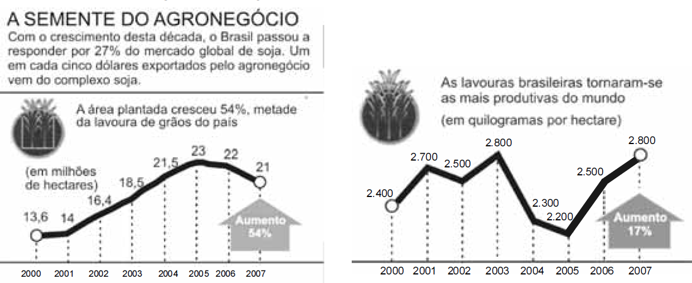

Os gráficos abaixo mostram informações a respeito da área plantada e da produtividade das lavouras brasileiras de soja com relação às safras de 2000 a 2007.
A proteína do campo. In: Veja, 23/7/2008, p. 79 e Ministério da Agricultura, Pecuária e Abastecimento (com adaptações).
Com base nessas informações, resolva o que se pede nos itens a seguir e transcreva suas respostas para o Caderno de Respostas, nos locais devidamente indicados.